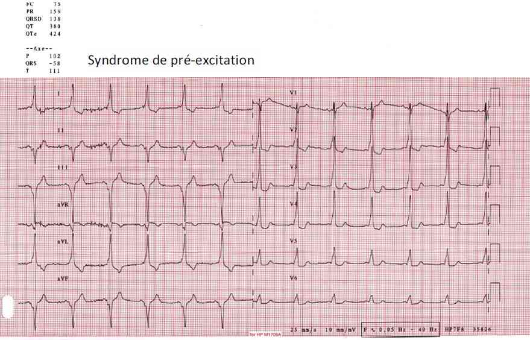

Bienvenue Sur Medical Education
Syndrome de Wolf Parkinson White
Spécialité : cardiologie / pédiatrie /
Points importants
-
Anomalie congénitale : voie de conduction supplémentaire entre oreillettes et ventricules
-
Le plus souvent découverte fortuite
-
Risque plus élevé de développer une tachycardie supra-ventriculaire (TSV)
-
Risque plus élevé d'arythmie ventriculaire et de mort subite (rare: 0,1%) si TSV
Présentation clinique / CIMU
SIGNES FONCTIONNELS
-
Aspécifiques du syndrome de WPW mais dépendant de la tolérance de la tachycardie
Présentation clinique / CIMU
SIGNES FONCTIONNELS
- Aspécifiques du syndrome de WPW mais dépendant de la tolérance de la tachycardie
Généraux
- Vertiges, asthénie
Cardiovasculaires
-
Chez le sujet jeune à coeur sain :
- palpitations
- lipothymie
-
Chez le patient avec une cardiopathie pré existante :
- collapsus
- syncope
- douleur de type angineuse
- décompensation cardiaque gauche
-
En cas de fibrillation auriculaire sur une voie accessoire à conduction antérograde rapide :
- tachycardie > 250/min avec risque de mort subite
CONTEXTE
Terrain
- Sujet jeune, enfant, le plus souvent sur coeur sain
Antécédents
- Episodes identiques de tachycardie souvent étiquetés : pathologie anxieuse
Circonstances de survenue
- Début brutal
- Parfois déclenché par l'émotion
EXAMEN CLINIQUE
- Tachycardie 180/min (120 à 250/min)
- Examen clinique aspécifique
-
Eventuellement signes de mauvaise tolérance de la tachycardie :
- collapsus, dyspnée, crépitants bilatéraux
EXAMENS PARACLINIQUES SIMPLES
ECG
 _165 ECG : syndrome de Wolf Parkinson White
En dehors des épisodes de tachycardies
- Rythme sinusal
- PR court (PR < 120 ms), onde delta, QRS large (QRS > 120 ms) : faisceau de Kent
- PR normal, pas d'onde delta : faisceau de Kent caché
- PR normal, onde delta : fibres de Mahaim
ECG per critique si tachycardie orthodromique
- Tachycardie régulière à QRS fins = superposable à celle de la maladie de Bouveret (pas d'aspect de pré-excitation)
- QRS larges si bloc de branche fonctionnel
- Ondes P rétrogrades
-
Signes en faveur d'une réentrée par voie accessoire plutôt qu'intranodale :
- intervalle RP > 70 ms
- bloc de branche ralentisseur
- onde P négative en D1 et AVL
ECG per critique si tachycardie antidromique
- QRS réguliers
- Aspect de pré-excitation
ECG per tachycardie avec fibres de Mahaim
- QRS réguliers
- Aspect de bloc de branche gauche
ECG pré-excitation et fibrillation auriculaire
- QRS irréguliers, larges (onde delta et QRS > 120ms), rapide
CIMU
- Tri 1 à 4
Diagnostic différentiel
-
Tachycardie jonctionnelle intranodale
-
Tachycardie supraventriculaire
-
Tachycardie ventriculaire
Traitement
TRAITEMENT PREHOSPITALIER / INTRAHOSPITALIER
Traitement
TRAITEMENT PREHOSPITALIER / INTRAHOSPITALIER
Stabilisation initiale
- Voie veineuse périphérique avec NaCl 0,9%
- Scope
- Oxygénation si détresse respiratoire
- Réduction de la tachycardie, enregistrement ECG de la réduction
-
Si trouble de la conscience : choc électrique externe
- enfant < 1an : conversion thermique (poche de glace sur visage, immersion du visage dans l'eau glacée)
-
En dehors des troubles de la conscience :
-
manoeuvres vagales :
- massage carotidien unilatéral sous-mandibulaire (si pas de sténose connue ni souffle carotidien)
- manoeuvre de Valvasva
- compression des globes oculaires (sauf pathologie oculaire)
-
enfant :
- < 1an : conversion thermique
- > 1an réflexe oculomoteur
-
si échec : traitement médicamenteux
- 1re intention (enfant et adulte) : adénosine
- inhibiteurs calciques (adulte) si échec ou contre-indication à l'adénosine, en privilégiant le diltiazem au vérapamil (complications hémodynamiques)
- bêtabloquant esmolol moins efficace
- amiodarone : si les autres familles sont inefficaces ou inappropriées
-
manoeuvres vagales :
MEDICAMENTS
Adénosine : administrée sous monitoring par un médecin ayant des moyens de réanimation cardiovasculaire
-
Adénosine triphosphate Striadyne® : ampoule 20 mg :
-
contre indications :
- BAV du 2e et 3e degré non appareillé
- maladie de l'oreillette
- asthme
- hypersensibilité connue à l'adénosine
- adulte : 10 mg IV flash. Si échec, 20 mg 2 ou 3 min plus tard
- enfant : 0,5 à 1 mg/kg
-
précautions :
- majoration possible d'une HoTA
- si fibrillation ou flutter auriculaire, risque d'une conduction rapide par la voie accessoire
-
effets indésirables :
- neurosensoriels : vertiges, anxiété, vision trouble, goût métallique
- gastro-intestinaux : nausées, vomissements
- cardiovasculaires : flush facial, oppression thoracique, pause sinusale, BAV, ESV, TV, très rarement fibrillation ventriculaire et torsade de pointe.
- respiratoire : dyspnée, bronchospasme
-
contre indications :
-
Adénosine Krenosin® ampoule 6 mg :
- adulte : 3 mg IV en 2 secondes, si échec 6 mg après 1 à 2 min. Si échec 12 mg
- enfant : pas d'études
- mêmes contre-indications et précautions d'emploi et effets indésirables que l'adénosine triphosphate
-
Diltiazem Tildiem® flacon 25 mg :
- adulte : 0,25 à 0,30 mg/kg IV en 2 min (jusqu'à une dose maximale de 50 mg)
-
contre-indications absolues :
- hypersensibilité au diltiazem
- dysfonction sinusale, BAV du 2e et 3e degré non appareillé
- fibrillation ou flutter auriculaire sur WPW
- HoTA
- choc cardiogénique et insuffisance ventriculaire gauche
- dantrolène, sultopride, pimozide, cisapride, alcaloïdes de l'ergot de seigle
-
Amiodarone :
- adulte : 150 mg IV en 10 min puis 360 mg en 6 heures puis 540 mg en 18 heures ou 4 cps de 200 mg par jour pendant 3 semaines puis diminution progressive
-
enfant : 10 à 15 mg/Kg/ jour per os
Surveillance
CLINIQUE
-
FC, FR, PA, SpO2/h
-
Enregistrement ECG de la réduction puis ECG post tachycardie
Devenir / orientation
CRITERES D'ADMISSION
-
Après réduction si normalisation du tracé : pas d'indication à une hospitalisation. Poursuite de la prise en charge en ambulatoire par un cardiologue.
CRITERES DE SORTIE
-
Normalisation du tracé
RECOMMANDATIONS DE SORTIE
-
Prise en charge en ambulatoire par un cardiologue
Mécanisme / description
-
Présence d'une voie accessoire extra nodale atrio-ventriculaire
-
Voie accessoire la plus connue : faisceau de Kent (90%) : fibres musculaires réalisant un pont entre les oreillettes et les ventricules
-
Fibres de Mahaim : pont le plus souvent atrio-fasciculaire (branche droite) ou nodo-fasciculaire ou nodo-ventriculaire
-
Conduction rapide des voies accessoires le plus souvent antérograde et rétrograde
-
En rythme sinusal, conduction de l'activité auriculaire à travers la voie normale nodo-hissienne associée ou non à une conduction par la voie accessoire si perméabilité antérograde. Excitation prématurée d'une partie du ventricule à côté de la voie accessoire : pré-excitation (onde delta, PR court). En l'absence de conduction antérograde : faisceau de Kent caché.
-
Point de départ de la tachycardie
-
Lors d'une tachycardie, le plus souvent, conduction de l'influx par la voie nodo-hissienne dans le sens antérograde puis par la voie accessoire dans le sens rétrograde (tachycardie orthodromique)
-
Plus rarement, tachycardie antidromique (10%) : passage antérograde par la voie accessoire puis rétrograde par les voies normales
Bibliographie
-
Adnet F, Lapostolle F, Petrovic T.Ecg en urgence. éditeur Arnette, Paris 2003.
-
Blomstrom-Lundqvist C, Scheinman MM, Aliot EM, et al. ACC/AHA/ESC Guidelines for the management of patients with supraventricular arrhythmias - executive summary. A report of the American College of Cardiology/American Heart Association task force on practice guidelines and the European Society of Cardiology. Committee for practice guidelines (writing committee to develop guidelines for the management of patients with supraventricular arrhythmias) developed in collaboration with naspe-heart rhythm society. J Am Coll Cardiol 2003;42:1493-531.
-
Franceschi F, Deharo JC, Djiane P Tachycardie jonctionnelles Cardiologie et Maladies Cardiovasculaires Société Française de Cardiologie Ed Masson 2007, 1060-6
-
Lacroix. Urgences et réanimation pédiatrique, ED Masson
-
Taboulet P. Prise en charge d'une tachycardie jonctionnelle par l'urgentiste. JEUR 2004;17:181-91.
-
Torres JP, Taboulet P, Basar A, de la Coussaye JE. Tachycardies et bradycardies. cŒurs et urgences. Journées Scientifiques de SAMu de France, Nice 2006. Société Française d'Editions Médicales 2007. 133-58
Devenir / orientation
CRITERES D'ADMISSION
- Après réduction si normalisation du tracé : pas d'indication à une hospitalisation. Poursuite de la prise en charge en ambulatoire par un cardiologue.
CRITERES DE SORTIE
- Normalisation du tracé
RECOMMANDATIONS DE SORTIE
- Prise en charge en ambulatoire par un cardiologue
Mécanisme / description
-
Présence d'une voie accessoire extra nodale atrio-ventriculaire
-
Voie accessoire la plus connue : faisceau de Kent (90%) : fibres musculaires réalisant un pont entre les oreillettes et les ventricules
-
Fibres de Mahaim : pont le plus souvent atrio-fasciculaire (branche droite) ou nodo-fasciculaire ou nodo-ventriculaire
-
Conduction rapide des voies accessoires le plus souvent antérograde et rétrograde
-
En rythme sinusal, conduction de l'activité auriculaire à travers la voie normale nodo-hissienne associée ou non à une conduction par la voie accessoire si perméabilité antérograde. Excitation prématurée d'une partie du ventricule à côté de la voie accessoire : pré-excitation (onde delta, PR court). En l'absence de conduction antérograde : faisceau de Kent caché.
-
Point de départ de la tachycardie
-
Lors d'une tachycardie, le plus souvent, conduction de l'influx par la voie nodo-hissienne dans le sens antérograde puis par la voie accessoire dans le sens rétrograde (tachycardie orthodromique)
-
Plus rarement, tachycardie antidromique (10%) : passage antérograde par la voie accessoire puis rétrograde par les voies normales
Bibliographie
-
Adnet F, Lapostolle F, Petrovic T.Ecg en urgence. éditeur Arnette, Paris 2003.
-
Blomstrom-Lundqvist C, Scheinman MM, Aliot EM, et al. ACC/AHA/ESC Guidelines for the management of patients with supraventricular arrhythmias - executive summary. A report of the American College of Cardiology/American Heart Association task force on practice guidelines and the European Society of Cardiology. Committee for practice guidelines (writing committee to develop guidelines for the management of patients with supraventricular arrhythmias) developed in collaboration with naspe-heart rhythm society. J Am Coll Cardiol 2003;42:1493-531.
-
Franceschi F, Deharo JC, Djiane P Tachycardie jonctionnelles Cardiologie et Maladies Cardiovasculaires Société Française de Cardiologie Ed Masson 2007, 1060-6
-
Lacroix. Urgences et réanimation pédiatrique, ED Masson
-
Taboulet P. Prise en charge d'une tachycardie jonctionnelle par l'urgentiste. JEUR 2004;17:181-91.
-
Torres JP, Taboulet P, Basar A, de la Coussaye JE. Tachycardies et bradycardies. cŒurs et urgences. Journées Scientifiques de SAMu de France, Nice 2006. Société Française d'Editions Médicales 2007. 133-58
Bibliographie
- Adnet F, Lapostolle F, Petrovic T.Ecg en urgence. éditeur Arnette, Paris 2003.
- Blomstrom-Lundqvist C, Scheinman MM, Aliot EM, et al. ACC/AHA/ESC Guidelines for the management of patients with supraventricular arrhythmias - executive summary. A report of the American College of Cardiology/American Heart Association task force on practice guidelines and the European Society of Cardiology. Committee for practice guidelines (writing committee to develop guidelines for the management of patients with supraventricular arrhythmias) developed in collaboration with naspe-heart rhythm society. J Am Coll Cardiol 2003;42:1493-531.
- Franceschi F, Deharo JC, Djiane P Tachycardie jonctionnelles Cardiologie et Maladies Cardiovasculaires Société Française de Cardiologie Ed Masson 2007, 1060-6
- Lacroix. Urgences et réanimation pédiatrique, ED Masson
- Taboulet P. Prise en charge d'une tachycardie jonctionnelle par l'urgentiste. JEUR 2004;17:181-91.
- Torres JP, Taboulet P, Basar A, de la Coussaye JE. Tachycardies et bradycardies. cŒurs et urgences. Journées Scientifiques de SAMu de France, Nice 2006. Société Française d'Editions Médicales 2007. 133-58
Auteur(s) : Sandrine CHARPENTIER